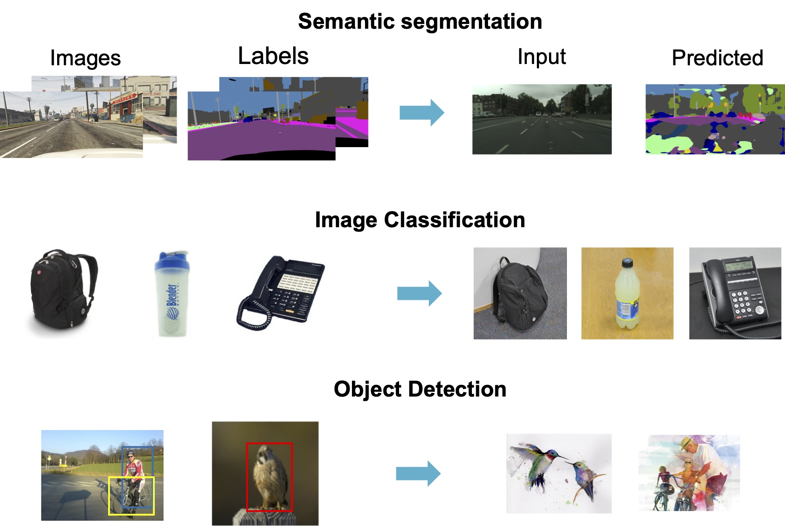
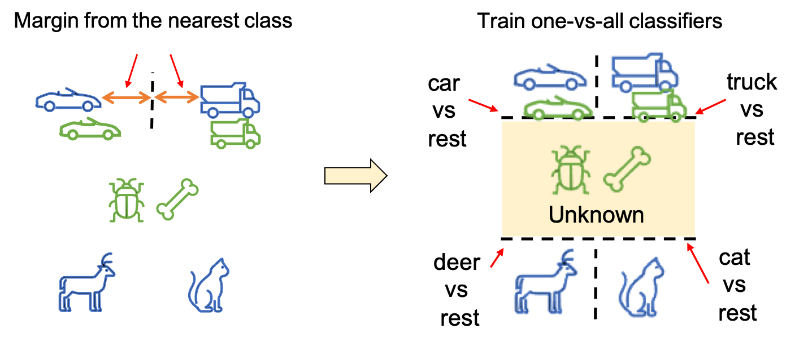
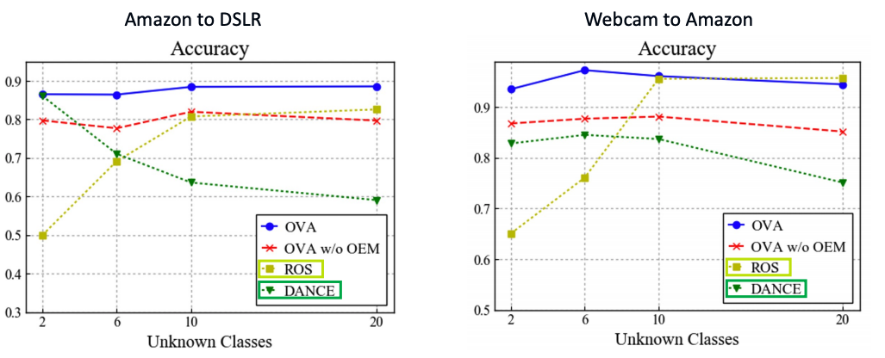
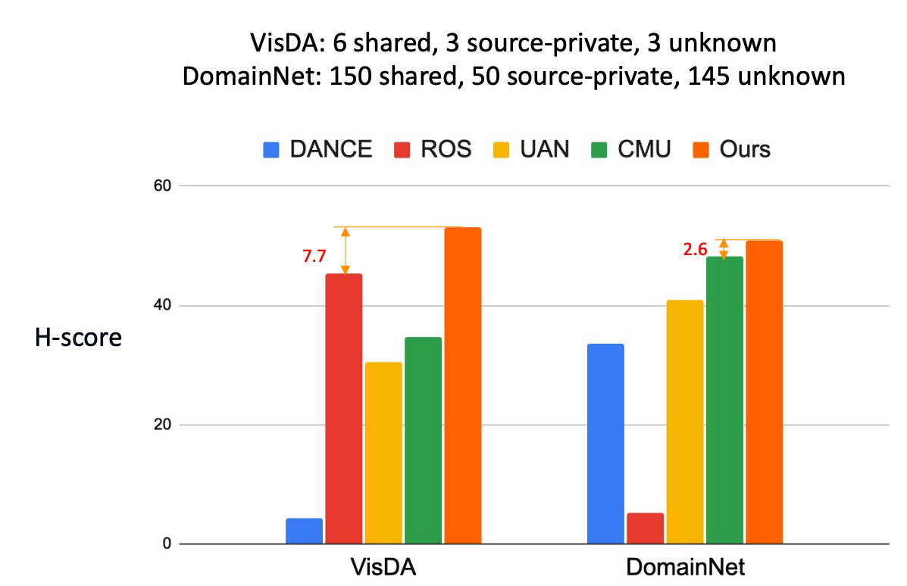

Figure.1: The example of dataset bias. A model trained on a specific domain often perform poorly on other domains.
Supervised machine learning relies on a training set with many labeled examples,
and assumes that, at test time, new unlabelled examples that the trained model is asked to
label will come from the same distribution as the training examples. However, in practice,
this is not true — training datasets are almost always biased in some way and are not representative
of all possible future input data that the system will see at test time. Such “dataset bias” results in
reduced accuracy on the target domain. In this work we propose a domain adaptation method to reduce such
domain bias using self-supervised learning on the unlabeled target domain data.
Problem in Universal DA: How can we set the threshold to identify novel categories?
Figure.2: In universal domain adaptation, the target domain can contain categories absent in the source (novel categories). But, we do not know how many of them are novel ones.
Center: Existing methods manually set the threshold by validation or using the ratio of novel samples, which is not realistic. Right: We propose to utilize one-vs-all classification.
Idea: Margin between classes can be a good threshold! Train one-vs-all classifiers!

Figure.3: We assume that the margin between classes can be a good threshold to identify novel categories. To exploit the margin, we propose to train one-vs-all classifiers for each class.
Advantages of OVANet
No need to manually select the threshold to reject unknown samples.
Much less hyper-parameters.
Experiments1: Varying number of unknown classes.

Exp1. Experiments on Office dataset by varying the number of unknown classes. Our method performs better or comparable to baseline methods across different number of unknown classes.
Experiments2: Results on large scale datasets.

OVANet outperforms other baselines in both settings. Note that OVANet is using the same hyper-parameters for all settings while some baselines are tuning them for each setting.
Reference
@article{saito2021ovanet,
title={OVANet: One-vs-All Network for Universal Domain Adaptation},
author={Saito, Kuniaki and Saenko, Kate},
journal={arXiv preprint arXiv:2104.03344},
year={2021}
}